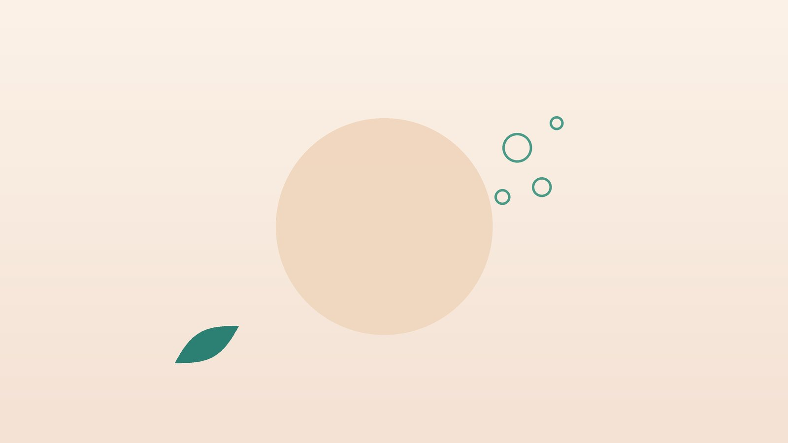

배에 가스가 차고 빵빵하다면, 복부팽만 한방 관리

나의 배, 이런 모습인가요?
- 아침에는 괜찮다가 저녁이 될수록 배가 불러 온다
- 조금만 먹어도 배가 빵빵해 바지 단추를 풀고 싶다
- 방귀와 트림이 잦고 꾸르륵 소리가 난다
- 변을 며칠씩 못 보거나 보고 나도 개운하지 않다
- 밀가루, 우유, 콩, 양파를 먹으면 유독 더 부풀어 오른다
- 긴장하거나 바쁜 날 배가 더 답답하다
이 체크리스트는 진단 도구가 아니라 상담이 필요한지 가늠해 보는 참고용입니다.
배는 왜 자꾸 부풀까요?
미국소화기학회(AGA)의 트림·복부팽만 전문가 검토는 복부팽만의 흔한 원인으로 과민성장증후군과 기능성 소화불량 같은 장-뇌 상호작용 장애, 변비, 탄수화물 흡수 장애, 소장 세균 과증식 등을 꼽습니다. 가스의 양이 실제로 많지 않아도 장이 예민해져 같은 양을 더 크게 느끼거나, 배 근육과 횡격막의 반응이 어긋나 배가 앞으로 밀려 나오는 경우도 있습니다.
음식 쪽에서는 장에서 잘 흡수되지 않고 발효되기 쉬운 탄수화물인 포드맵(FODMAP)이 대표적입니다. 밀, 양파, 마늘, 콩류, 우유의 유당, 사과·배 같은 일부 과일, 설탕 대체 감미료가 여기에 속합니다. 몇 주 동안 이런 음식을 줄였다가 하나씩 다시 먹어 보며 나에게 맞지 않는 음식을 찾는 방식이 과민성장증후군 진료지침에서 권하는 방법입니다. 변이 장에 오래 머물러도 발효가 늘어 가스가 차기 때문에 변비가 있다면 이것부터 다스려야 합니다.
내시경 등 검사가 먼저인 경고 신호
- 식단 조절을 하지 않았는데 몸무게가 빠졌다
- 변에 붉은 피가 묻어 나오거나 짜장처럼 검은 변이 나온다
- 50세 이후에 처음 생겼거나 증상이 달라졌다
- 건강검진에서 빈혈 수치가 낮게 나왔다
- 구토가 반복되거나 배가 점점 단단하게 불러 온다
- 가족 중 대장암, 위암, 난소암, 염증성 장질환 환자가 있다
여성에게 새로 생긴 지속적인 복부팽만은 드물게 난소 질환의 신호일 수 있어 산부인과 확인이 필요하고, 배가 심하게 아프면서 변과 방귀가 모두 멈추면 장폐색일 수 있어 응급실로 가야 합니다.
한의학은 복부팽만을 어떻게 보나요?
한의학에서는 배가 부풀고 그득한 것을 창만(脹滿), 명치 아래가 막힌 듯 답답한 것을 비만(痞滿)이라 하였습니다. 『황제내경 소문』 음양응상대론에는 '탁한 기운이 위에 있으면 배가 불러 오른다(濁氣在上 則生䐜脹)'는 구절이 있는데, 아래로 내려가야 할 것이 내려가지 못하고 머물면 배가 부풀어 오른다는 뜻입니다.
음식을 받아들여 아래로 내려보내는 일은 비위(脾胃)가, 그 흐름이 막히지 않게 하는 일은 간(肝)의 소통 기능이 맡는다고 보았습니다. 스트레스로 간의 기운이 막히면 배가 부풀었다 꺼졌다를 반복하고, 비위가 약하면 조금만 먹어도 오래 그득하며, 몸이 차면 꾸르륵거리며 가스가 찹니다. 같은 팽만이라도 막혀서인지, 약해서인지, 차서인지를 가려야 치료 방향이 정해집니다.
나는 어떤 유형일까?
1. 간기울체(肝氣鬱滯) 긴장하면 부푸는 유형
- 이런 분에게 많아요
- 스트레스가 많고 예민한 분
- 나타나는 모습
- 신경 쓰는 일이 생기면 배가 부풀고 방귀를 뀌면 조금 편해진다
- 함께 오는 몸의 신호
- 옆구리 답답함, 한숨, 변비와 설사가 번갈아 옴
- 진찰에서 보이는 모습
- 혀 가장자리가 붉고 맥이 팽팽함
- 치료 방향
- 막힌 기운을 풀어 흐름을 돕는 방향 (시호소간산 계열)
- 오늘부터 해 볼 것
- 식사 뒤 10분 정도 천천히 걸어 보세요.
2. 비허기체(脾虛氣滯) 약해서 오래 그득한 유형
- 이런 분에게 많아요
- 소화가 약하고 쉽게 지치는 분
- 나타나는 모습
- 조금만 먹어도 배가 불러 오래가고 저녁에 심하다
- 함께 오는 몸의 신호
- 식욕 저하, 무른 변, 피로
- 진찰에서 보이는 모습
- 혀가 옅고 가장자리에 치아 자국이 남음
- 치료 방향
- 비위를 돕고 기운을 돌리는 방향 (향사육군자탕 계열)
- 오늘부터 해 볼 것
- 한 번에 많이 먹지 말고 천천히 꼭꼭 씹으세요.
3. 한습(寒濕) 차서 꾸르륵대는 유형
- 이런 분에게 많아요
- 찬 음료와 날음식을 즐기거나 배가 찬 분
- 나타나는 모습
- 배가 차고 꾸르륵 소리와 함께 가스가 찬다
- 함께 오는 몸의 신호
- 무른 변, 손발 냉증, 몸이 무거움
- 진찰에서 보이는 모습
- 혀가 희고 설태가 두껍고 촉촉함
- 치료 방향
- 속을 데우고 습을 말리는 방향 (후박온중탕·평위산 계열)
- 오늘부터 해 볼 것
- 찬 음료 대신 미지근한 물을 드세요.
4. 장조변비(腸燥便秘) 막혀서 차오르는 유형
- 이런 분에게 많아요
- 물을 적게 마시고 변비가 오래된 분
- 나타나는 모습
- 변을 며칠 못 보면 배가 단단히 부르고 가스가 찬다
- 함께 오는 몸의 신호
- 입 마름, 딱딱한 변, 아랫배 압통
- 진찰에서 보이는 모습
- 혀가 붉고 설태가 마름
- 치료 방향
- 장을 촉촉하게 하고 내려보내는 방향 (마자인환 계열)
- 오늘부터 해 볼 것
- 아침 식사 뒤 정해진 시간에 화장실에 앉으세요.
한의원에서는 어떻게 진찰하나요?
- 검사 결과 확인: 내시경, 혈액 검사, 복부 초음파 등 최근 검사 결과와 복용 중인 약을 확인합니다.
- 음식·증상 일지: 1~2주 동안 먹은 음식과 팽만이 심했던 시간, 배변 상태를 적어 오시면 원인을 좁히는 데 도움이 됩니다.
- 배변 문진: 배변 횟수와 변의 모양, 힘주는 정도를 여쭙니다.
- 복진·설진·맥진: 배의 단단함과 가스 소리, 압통 부위, 혀와 맥으로 유형을 판단합니다.
침·약침·한약 치료는 어떻게 하나요?
1. 침 치료
- 중완(中脘): 배꼽과 명치 가운데. 위의 기능을 돕고 그득함을 덜어 줍니다.
- 천추(天樞): 배꼽 양옆 손가락 세 마디. 장의 움직임을 고르게 합니다.
- 족삼리(足三里)·상거허(上巨虛): 무릎 아래 정강이 바깥, 족삼리에서 손가락 네 마디 더 아래가 상거허. 위장과 대장의 흐름을 돕습니다.
- 내관(內關): 손목 안쪽 주름에서 손가락 세 마디 위 두 힘줄 사이. 명치의 답답함과 메스꺼움을 덜어 줍니다.
- 태충(太衝): 엄지발가락과 둘째 발가락 사이를 발등 쪽으로 따라 올라가 뼈가 만나기 직전의 오목한 곳. 긴장으로 막힌 기운을 풉니다.
기능성 소화불량과 과민성장증후군에서 침 치료가 팽만감을 포함한 증상을 줄였다는 무작위 연구들이 있지만, 연구마다 방법과 규모가 달라 효과에는 개인차가 있습니다. 증상 일지로 변화를 확인하며 진행합니다.
2. 약침과 온열 요법
등 쪽의 위장 관련 경혈과 아랫배 주변에 약침을 시행해 장의 긴장을 풀어 줍니다. 배가 차고 꾸르륵거리는 유형은 온열 요법을 함께 받으실 수 있습니다.
3. 한약
탕약을 위주로, 막힌 분은 기운을 돌리고, 약한 분은 비위를 돕고, 찬 분은 속을 데우며, 변비가 있는 분은 장을 촉촉하게 하는 약재를 중심에 둡니다. 임신 중이라면 진료 때 꼭 알려 주세요. 확인 후 안전한 약재로 처방합니다. 위장약이나 변비약 등 드시는 약은 알려 주시면 확인해 처방합니다. 한약은 원장이 원내 탕전실에서 약재 선별부터 달이는 과정까지 직접 관리하며, 10일분씩 처방해 복용 경과를 보고 약재 구성과 양을 조절합니다.
원장님이 네이버 블로그에 진료 이야기와 건강 정보를 꾸준히 올리고 있습니다. 더 많은 이야기는 블로그에서 확인해 보세요.
블로그 보기치료는 어떤 순서로 진행되나요?
- 경고 신호 확인 체중 감소, 혈변, 나이 등을 살펴 필요하면 내시경 검사를 먼저 받습니다.
- 첫 한방 진료 유형을 정하고 음식·증상 일지와 배변 습관을 안내합니다.
- 2~6주 주 1~2회 침 치료와 약침, 탕약을 하며 저포드맵 식사를 시도합니다.
- 음식 다시 넣기 줄였던 음식을 하나씩 다시 먹어 보며 나에게 맞는 식단을 정합니다.
저포드맵 식사는 오래 이어 가는 식단이 아니라 원인 음식을 찾기 위한 과정이므로, 몇 주 뒤에는 꼭 다시 넣어 보는 단계를 거칩니다.
배를 가볍게 하는 생활 관리
- 천천히 먹기: 급하게 먹거나 말하면서 먹으면 공기를 많이 삼키게 됩니다. 한 끼에 20분 이상 들이세요.
- 탄산·껌 줄이기: 탄산음료와 껌, 빨대는 삼키는 공기를 늘립니다.
- 포드맵 점검: 팽만이 심한 날 먹은 밀가루, 우유, 콩, 양파, 마늘, 과일을 일지에 표시해 봅니다.
- 변비 다스리기: 물과 채소를 조금씩 늘리고, 식이섬유는 갑자기 많이 늘리면 가스가 더 찰 수 있어 천천히 늘립니다.
- 움직이기: 식후 가벼운 걷기는 가스가 장을 따라 내려가는 것을 돕습니다.
다른 진료가 함께 필요한 경우
- 경고 신호가 하나라도 있다면 소화기내과에서 내시경 검사를 먼저 받으세요.
- 유당 불내증이나 셀리악병이 의심되면 검사로 확인할 수 있습니다.
- 여성의 새로 생긴 지속적인 팽만은 산부인과 초음파 확인이 필요합니다.
- 갑상선 기능 저하, 당뇨가 있다면 장의 움직임에 영향을 주니 내과 관리를 함께 하세요. 약은 임의로 끊지 마세요.
자주 묻는 질문 Q&A
- Q1. 가스가 많아서 배가 부른 건가요?
- 실제 가스 양은 정상인데 장이 예민해 더 크게 느끼는 경우도 많습니다.
- Q2. 포드맵이 뭔가요?
- 장에서 잘 흡수되지 않고 발효되기 쉬운 탄수화물을 묶어 부르는 말로, 밀, 양파, 콩, 유당 등이 해당됩니다.
- Q3. 저포드맵 식단을 계속 해야 하나요?
- 몇 주 줄였다가 하나씩 다시 먹어 보며 맞지 않는 음식만 골라 줄이는 것이 원칙입니다.
- Q4. 유산균을 먹으면 좋아지나요?
- 도움이 되는 분도 있지만 오히려 가스가 늘기도 해, 몇 주 먹어 보고 변화를 확인하세요.
- Q5. 저녁마다 배가 부풀어요.
- 하루 동안 먹은 음식과 자세, 긴장이 쌓여 저녁에 심해지는 경우가 흔합니다.
- Q6. 변비가 있으면 팽만이 심해지나요?
- 변이 오래 머물면 발효가 늘어 가스가 차기 때문에 변비 관리가 함께 필요합니다.
- Q7. 치료는 얼마나 받아야 하나요?
- 보통 2~6주 동안 증상 일지를 보며 경과를 확인합니다.
- Q8. 내시경을 꼭 받아야 하나요?
- 체중 감소, 혈변, 50세 이후 새로 생긴 경우처럼 경고 신호가 있으면 먼저 받아야 합니다.
문원열 대표원장한의사 · 365스마일한의원
임상 경력 15년, 인천 서구 가정동에서 개원 후 10년째 진료하고 있으며, FCST 턱관절학회·연부조직학회·침도학회 등에서 활동합니다. 아픈 곳만이 아니라 증상의 원인을 찾아 진료합니다.
진료 안내
- 진료시간
- 평일 09:00~20:00 (점심시간 13:00~14:00, 접수 마감 19:30)
토·일·공휴일 09:00~15:00 (접수 마감 14:30) - 주소
- 인천광역시 서구 가경주로 46, 2층 (가정동)
인천2호선 가정중앙시장역 인근
영상으로 길 안내 보기 → - 주차
- 한의원 건물 바로 앞 1층 도원주차장
- 예약
- 예약 바로가기 또는 전화 예약
진료시간은 사정에 따라 바뀔 수 있으니 방문 전 전화로 확인해 주세요.
함께 읽으면 좋은 칼럼
건강 칼럼 전체 보기 →


참고 자료
- Moshiree B, Drossman D, Shaukat A. AGA Clinical Practice Update on Evaluation and Management of Belching, Abdominal Bloating, and Distention: Expert Review. Gastroenterology, 2023
- Lacy BE, et al. ACG Clinical Guideline: Management of Irritable Bowel Syndrome. American Journal of Gastroenterology, 2021 — 원문
- 『황제내경 소문(素問)』 음양응상대론(陰陽應象大論), 탁기재상 즉생진창(濁氣在上 則生䐜脹)
- 질병관리청 국가건강정보포털 — 원문
※ 이 글은 일반적인 건강 정보이며, 개인의 상태에 따라 치료 방법과 결과는 다를 수 있습니다. 정확한 진단과 치료는 진료를 통해 결정됩니다. 침·약침 시술 후 드물게 멍, 통증 등이 생길 수 있습니다.